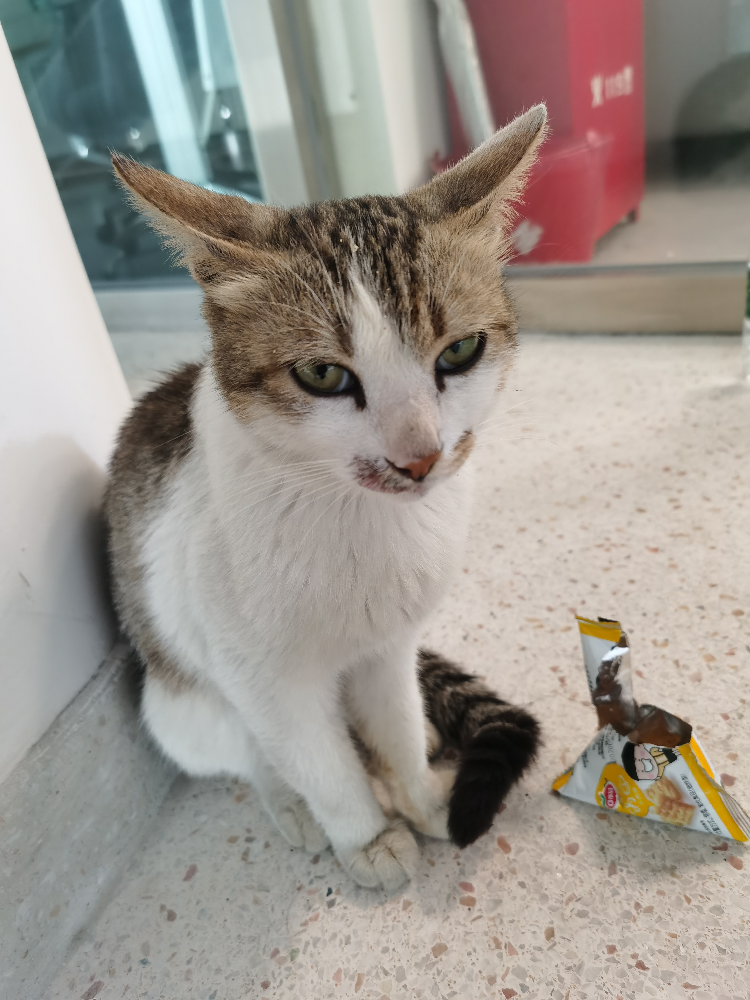

Guoxing Sun 😃 孙国兴Master Student
Visual Intelligent Center (VIC) |
 |
I am a third year (2019-) Master student in Computer Science at ShanghaiTech University, supervised by Prof. Jingyi Yu. I also work closely with Prof. Lan Xu. I obtained my bachelor degree from Northeastern University in 2019.
My research interests lie at the intersection of computer graphics and vision, including performance capture, scene understanding, 3D/4D reconstruction and realistic rendering. I enjoy exploring new things and ideas to create magic effects and useful applications, especially to capture and understand the human-centric scenes in the complex real world.
|
|
Neural Free-Viewpoint Performance Rendering under Complex Human-object Interactions
Guoxing Sun, Xin Chen, Yizhang Chen, Anqi Pang, Pei Lin, Yuheng Jiang, Lan Xu, Jingya Wang, Jingyi Yu. ACM MM, 2021 [Paper] |
|
|
|
Template adapted from the first awesome page and the second awesome page. |